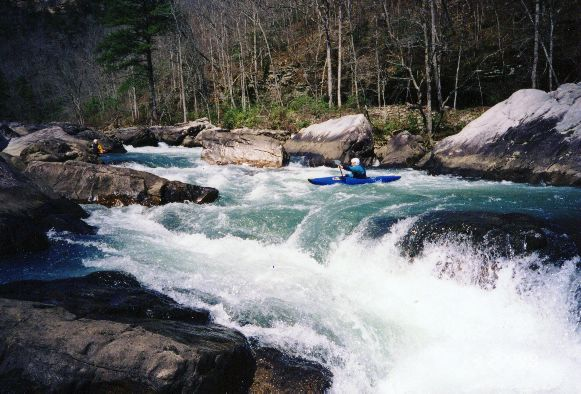
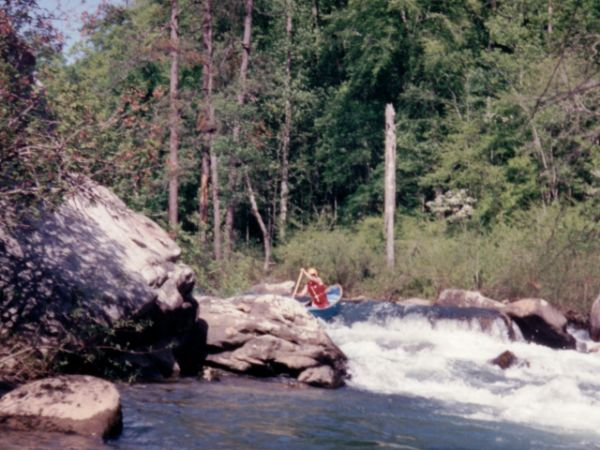

Little River Canyon, Chairlift Section

Setting up for the last drop on Bottleneck. You have to get right but you must make the turn too. The water is almost always this beautiful.

Charlie Stotts on a low water run in April 1993.